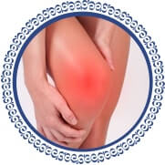
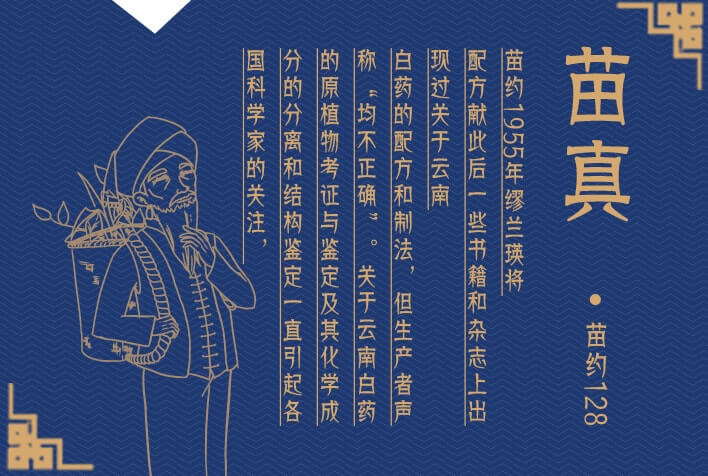

患者使用真实记录访谈
您是否正在经受下列困扰？
颈椎病
主要危害有颈背疼痛、上肢无力、手指发麻、下肢乏力、行走困难、头晕、恶心、呕吐， 甚至视物模糊、心动过速及吞咽困难等。
腰椎病
腰部持续性钝痛，平卧位减轻站立则加剧腿部麻木、畏寒、走路出现跛行的情况。 腰部至大腿及小腿后侧的放射性刺激或麻木感直达足底部。
骨质增生
主要危害有体质虚弱及退行性变；由于肌肉的牵拉或撕脱、出血、血肿机化，形成刺状或唇样的骨质增生。
风湿
通常所说的风湿性关节炎是风湿热的主要表现之一，寒冷、潮湿等因素可诱发本病。 下肢大关节如膝关节、踝关节最常受累。

类风湿
类风湿的危害：影响睡觉和平常活动、诱发关 节变形、诱发残废、瘫痪等， 还会兼并着有一定的毒副作用、合并肿瘤、口轻溃疡等危害。
肩周炎
早期肌肉痉挛与萎缩、三角肌、冈上肌等肩周围肌肉早期可出现痉挛， 晚期可发生废用性肌萎缩，出现肩峰突起，上举不便，后弯不利等。
传统治愈方法苦不堪言
传统治疗一般以吃药，输液、间断住、严重者为常规牵引、开放手术治疗等，产生一系列病痛，高费用治疗， 都会产生一系列多少程度上的后遗症、费用高、风险高，伴随着一些几乎无效的治疗手段， 导致其症状进行性加重，延误治疗。
苗约128未
专业解决6大风湿类病症
01
源自贵州苗族、效果卓越
Good quality, no side effect
炮制虽繁必不敢省人工，品未虽贵必不敢减物力”， 是苗真一直不变严格遵守的制药原则。 在神秘配方的基础上坚持使用优质的地道药材，秉承 “细工出效药”的古训， 抓住了质量就是抓住了疗效，疗效是企业发展的生命。
02
独特三联产品、品质不复发
Unique triple products and no recurrence of quality
膏药外用加经络感传药灸：不手术、不吃药、无痛苦、对肝肾胃肠无损害， 天然绿色、安全快捷。 外敷、外贴直接作用病变部位，攻补结合， 经络感传药灸疗法，快速疏通经络，平衡阴阳，经络通，百病无。
03
个性化解决方案、效果保证
Drug effect guarantee
遵循苗药鲜药入药原理，采用中药醇提技术， 结合现代药理研制出针对颈部、肩部、腰部、腿部疼痛、促进康复的重要配方。 杰出品质引起国家中药管理机构领导的高度重视，贵州苗真中医药研究有限公司，苗药研究中心。
04
效果卓著、物有所值
Good quality, no side effect
苗药是苗族人民在长期的生产活动与疾病、伤害作斗争的实践中，积累了宝贵医疗经验的成果。 苗药对于致病因素、疾病诊断、治疗及预防等都有较显著的效果， 苗族人名在处方用药方面，有着许多的独到之处，积累了丰富的医疗经验， 苗药成为我国传统医药宝库的一部分。
05
无效退款、无后顾之忧
Unique triple products and no recurrence of quality
商家承诺：为保障每位消费者的合法权益，现商榷若使用之后无效果， 可将其使用剩余膏药与有效收据寄回本公司，并予以退款。 并且可由专业医师进行专业诊断，解决客户一切问题。
06
专职中医药师全程使用跟踪
Full time consultants use tracking
数十名执证从业者，帮您立案、建档，监控整个使用过程， 保证您的良好应用整套使用按摩手册，撼市冷敷贴配合传统学位按摩法， 佐口服液，健康由内而外调节身体各项机能。
荣誉资质
Honorary qualifications
走进苗真
Honorary qualifications


苗真环境

常见问答
Common problem
问
传说颈椎病治疗相对麻烦，我们该怎么办？
答
南方医科大学第三附属医院脊柱外科一区主任张忠民介绍，
仰卧位能够很好地维持颈椎的自然弧度，适合有颈椎或脊椎病痛的人……
问
传说颈椎病治疗相对麻烦，我们该怎么办？
答
南方医科大学第三附属医院脊柱外科一区主任张忠民介绍，
仰卧位能够很好地维持颈椎的自然弧度，适合有颈椎或脊椎病痛的人……
友情链接
Friendship link
- 友情链接
- 友情链接
- 友情链接
- 友情链接
- 友情链接
- 友情链接
- 友情链接
- 友情链接